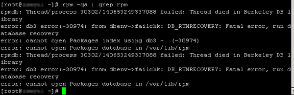

Linux重建RPM数据库（修复损坏的RPM数据库）
但并非所有的用户操作都“按常理出牌”，例如 RPM 包在升级过程被强行退出、RPM 包安装意外中断等误操作，都可能使 RPM 数据库出现故障，后果是当安装、删除、査询软件包时，请求无法执行，如图 1 所示：

图 1 RPM数据库出现故障
这时就需要重建 RPM 数据库，执行如下 2 步操作：
-
删除当前系统中已损坏的RPM数据库，执行如下命令：
[root@localhost ~]# rm -f /var/lib/rpm/_db.*
-
重建 RPM 数据库，执行如下命令：
[root@localhost -]# rpm -rebuilddb
这一步需花费一定时间才能完成。
除了用户误操作导致 RPM 数据库崩溃，有些黑客入侵系统后，为避免系统管理员通过 RPM 包校验功能检测出问题，会更改 RPM 数据库。
理论上，系统一旦被黑客“光顾”，则做的任何操作都将不可信。
对于这种情况，我们可以按照以下步骤对文件进行检测：-
对于要校验的文件或命令，找到它属于哪个软件包，如下命令所示：
[root@localhost ~]# rpm -qf/etc/rc.d/init.d/smb
samba-3.0.23c-2 -
使用 -dump 选项查看每个文件的信息，使用 grep 命令提取对应文件信息：
[root@localhost ~]# rpm -ql -dump samba|grep /etc/rc.d/init.d/smb
此信息中，“2087”表示 smb 文件最初的字符数，“b1c26e5292157a83cadabe851bf9b2f9”表示 smb 文件的 MD5 校验值，“0755 root root”表示文件权限及所有者、所属组。
/etc/rc.d/init.d/smb 2087 1157165946 b1c26e5292157a83cadabe851bf9b2f9 0100755 root root 1 0 0X -
查看实际的文件，通过对比文件大小，所有人、所属组、权限、MD5 校验值等数据，判断文件是否被改动过：
[root@localhost ~]# ls -l /etc/rc.d/init.d/smb
以上校验结果显示，系统的 /etc/rc.d/init.d/smb 文件的信息和通过 rpm-ql-dump Samba 命令获取的信息一致，因此可以断定此文件没有被入侵或更改。
-rwxr-xr-x 1 root root 2087 Sep 2 2006/etc/rc.d/init.d/smb
[root@localhost ~]# md5sum /etc/rc.d/init.d/smb
b1c26e5292157a83cadabe851bf9b2f9 /etc/rc.d/init.d/smb
注意，如果确信 RPM 数据库遭到了修改，就要基于从光盘或者其他值得信赖的来源处获得的 Samba RPM 文件进行检査。
[root@localhost~]# rpm -ql --dump -p /mnt/cdrom/Fedora/RPMS/samba-3.0.23c-2.i386.rpm | grep /etc/rc.d/init.d/smb
warning: samba-3.0.23c-2.i386.rpm: Header V3 DSA signature: NOKEY, key ID 412a&62
/etc/rc.d/init.d/smb 2087 1157165946 b1c26e5292157a83cadabe851 bf9b2f9 0100755 root root 1 0 0 X
关注微信公众号「站长严长生」，在手机上阅读所有教程，随时随地都能学习。本公众号由C语言中文网站长运营，每日更新，坚持原创，敢说真话，凡事有态度。

微信扫描二维码关注公众号